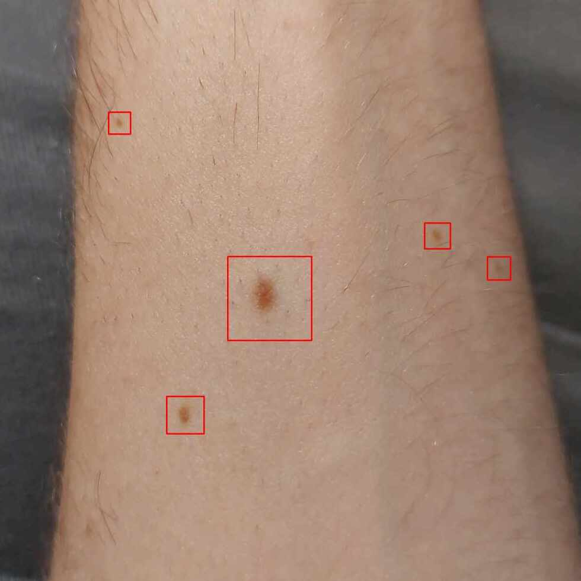

CodeTeacher
Aplikacja podobna do ,,Duolingo", lecz stworzona dla informatyków. Program ten tworzył wygenerowane przez sztuczną inteligencje zadania z zamkniętymi odpowiedziami. Za dobre odpowiedzi dostawało się punkty XP, dzięki którym można było przejść do następnego poziomu

SkinApp
Aplikacja, dzięki której użytkownik poprzez zrobienie zdjęcia pieprzykom może sprawdzić czy są one nowotwórcze. Całość działa dzięki machine Learning oraz kodzie napisanym w Kotlin i Python